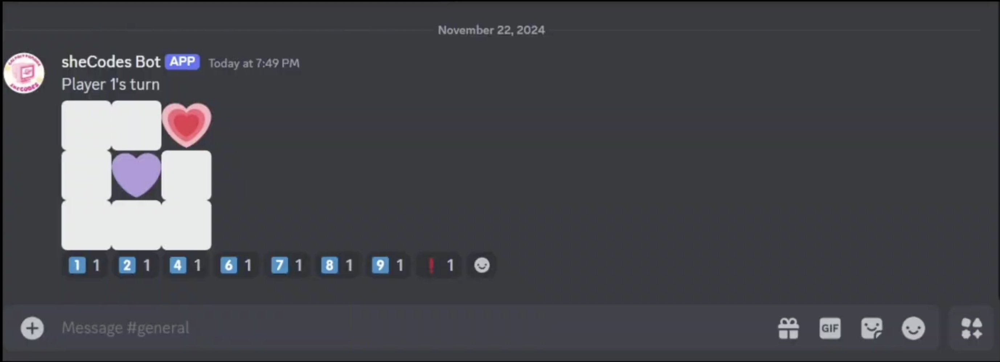
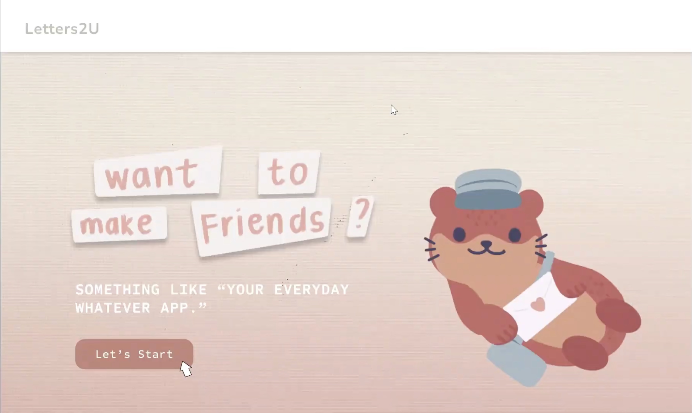
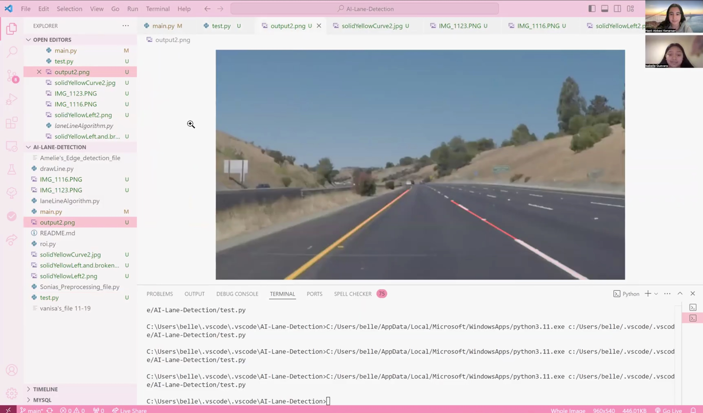
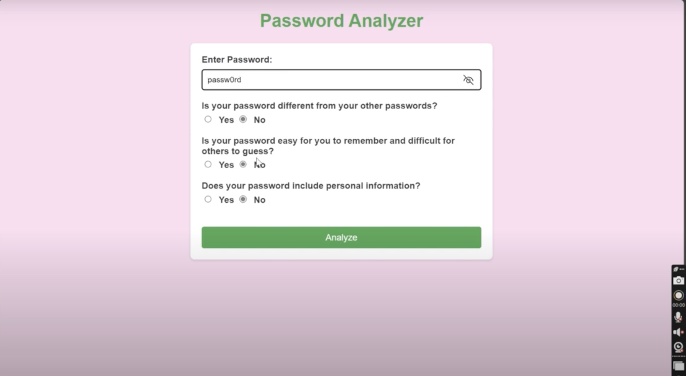
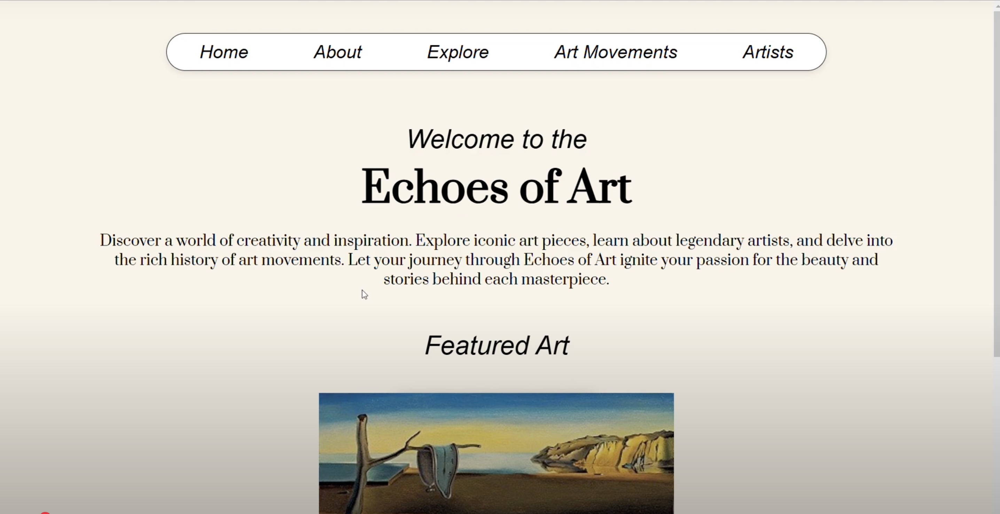

Semester-Long Projects (SLP) is a great program to enrich coding skills in a group setting. Participants are formed into groups of similar interests. Each group is led by a mentor to build a unique coding project. SLP includes workshops like git, inclusive design, and other topics to aid the project's completion. At the end of the semester, the groups come together for sheCode's SLP Demo Day to showcase their project!
Thank you for your 10 weeks of teamwork and dedication! You have accomplished these past 10 weeks and should be proud of all the work you have done. We hope that SLP has encouraged you to explore more about Computer Science and inspires you to continue pursuing projects outside of class. We hope you had fun and learned a lot! sheCodes and sheBoard are so proud of you and we can’t wait to see where you will go from here. -Laura Siu (she/her) sheCodes Internal Vice President 2022-2023
We would like to thank you judges for being a SLP Demo Day Judge! We appreciate you sharing your expertise and guidance with our members. On behalf of sheCodes, we sincerely thank you for taking the time to help create a meaningful experience for our SLP participants.

Video Demo
Github

Video Demo Desktop App
Video Demo Mobile App
Figma Desktop App
Figma Mobile App
GitHub Link

Github Link


Cybersecurity Video Demo
UI/UX Video Demo
Cybersecurity GitHub Link
UI/UX GitHub Link